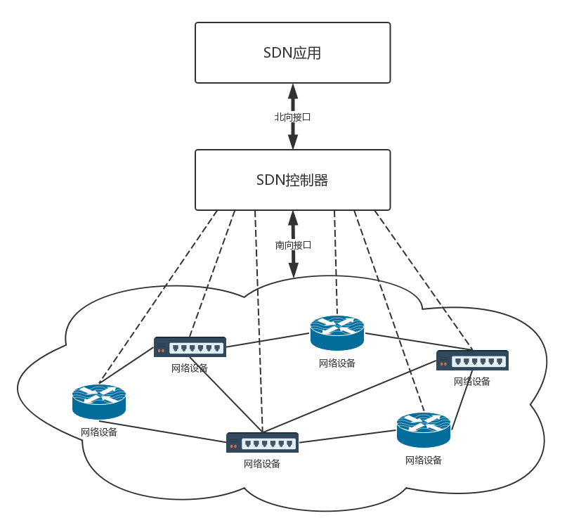
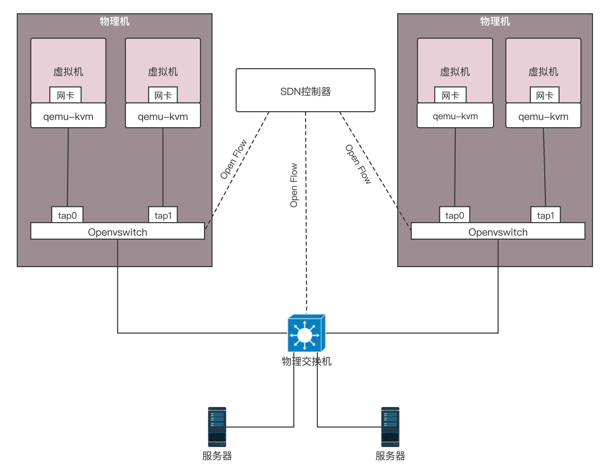
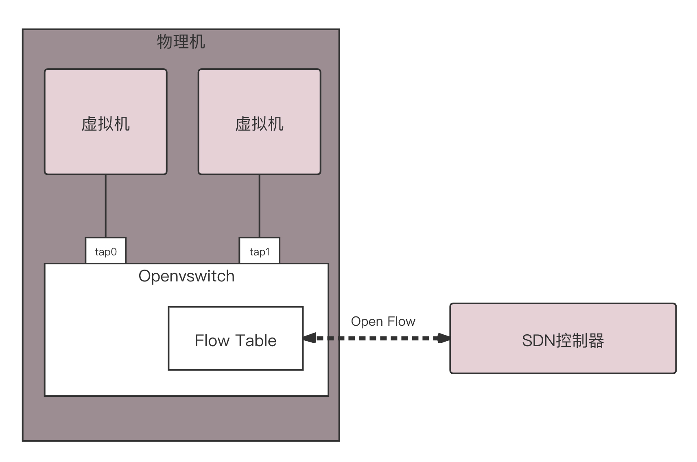
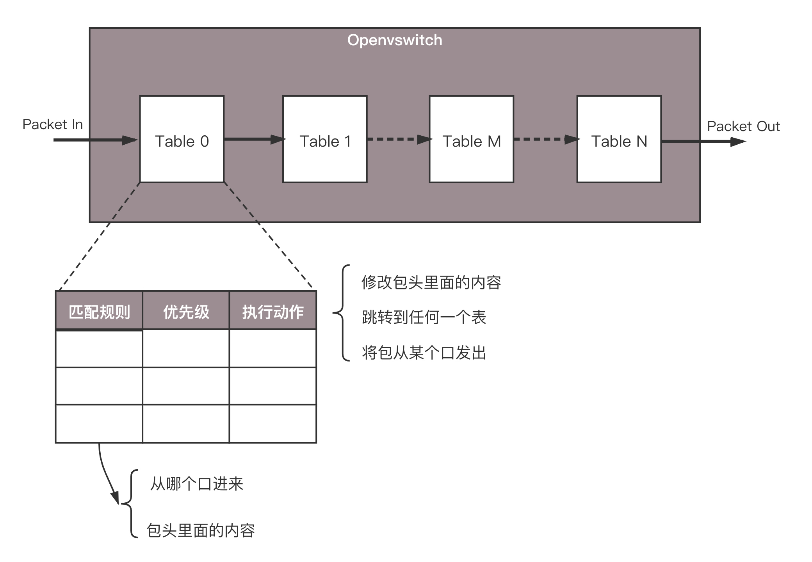
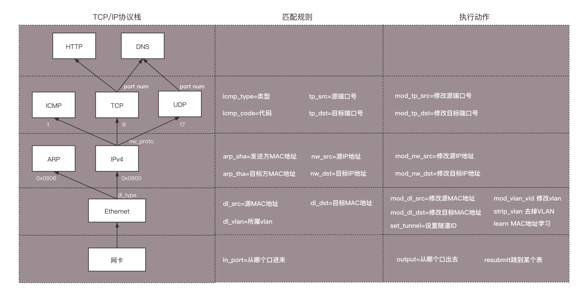
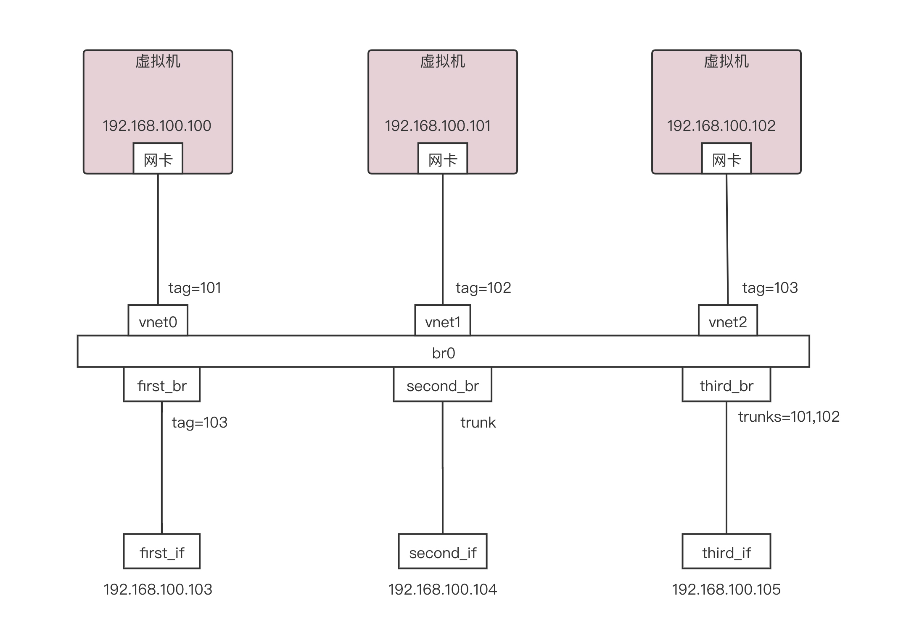
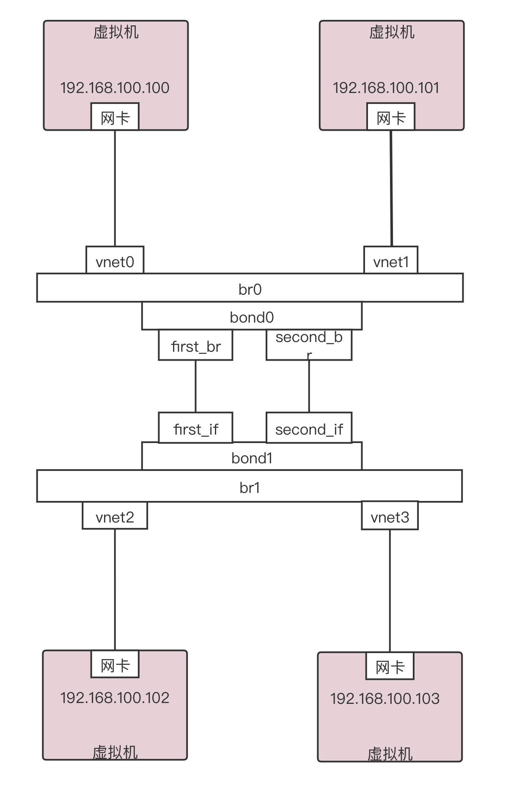
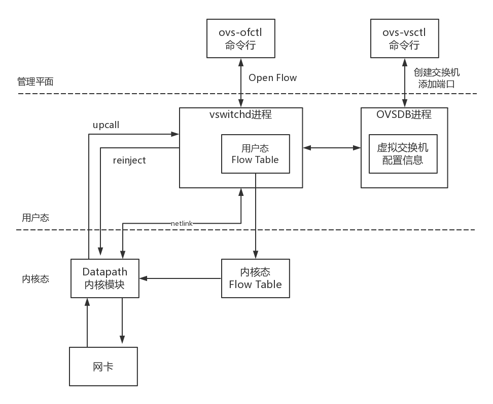
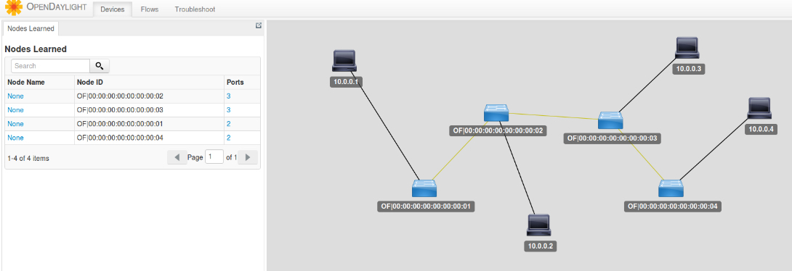
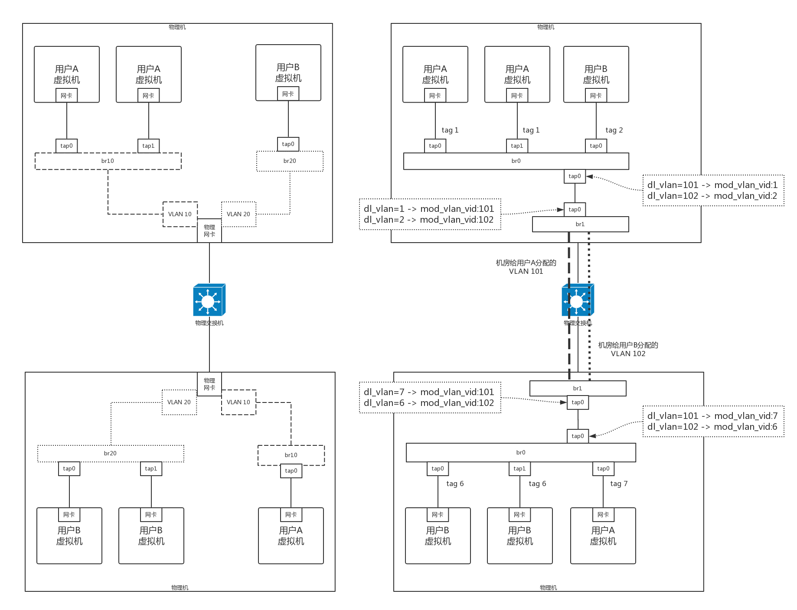

- 00 开篇词 想成为技术牛人？先搞定网络协议！.md.html
- 01 为什么要学习网络协议？.md.html
- 02 网络分层的真实含义是什么？.md.html
- 03 ifconfig：最熟悉又陌生的命令行.md.html
- 04 DHCP与PXE：IP是怎么来的，又是怎么没的？.md.html
- 05 从物理层到MAC层：如何在宿舍里自己组网玩联机游戏？.md.html
- 06 交换机与VLAN：办公室太复杂，我要回学校.md.html
- 07 ICMP与ping：投石问路的侦察兵.md.html
- 08 世界这么大，我想出网关：欧洲十国游与玄奘西行.md.html
- 09 路由协议：西出网关无故人，敢问路在何方.md.html
- 10 UDP协议：因性善而简单，难免碰到“城会玩”.md.html
- 11 TCP协议（上）：因性恶而复杂，先恶后善反轻松.md.html
- 12 TCP协议（下）：西行必定多妖孽，恒心智慧消磨难.md.html
- 13 套接字Socket：Talk is cheap, show me the code.md.html
- 14 HTTP协议：看个新闻原来这么麻烦.md.html
- 15 HTTPS协议：点外卖的过程原来这么复杂.md.html
- 16 流媒体协议：如何在直播里看到美女帅哥？.md.html
- 17 P2P协议：我下小电影，99%急死你.md.html
- 18 DNS协议：网络世界的地址簿.md.html
- 19 HttpDNS：网络世界的地址簿也会指错路.md.html
- 20 CDN：你去小卖部取过快递么？.md.html
- 21 数据中心：我是开发商，自己拿地盖别墅.md.html
- 22 VPN：朝中有人好做官.md.html
- 23 移动网络：去巴塞罗那，手机也上不了脸书.md.html
- 24 云中网络：自己拿地成本高，购买公寓更灵活.md.html
- 25 软件定义网络：共享基础设施的小区物业管理办法.md.html
- 26 云中的网络安全：虽然不是土豪，也需要基本安全和保障.md.html
- 27 云中的网络QoS：邻居疯狂下电影，我该怎么办？.md.html
- 28 云中网络的隔离GRE、VXLAN：虽然住一个小区，也要保护隐私.md.html
- 29 容器网络：来去自由的日子，不买公寓去合租.md.html
- 30 容器网络之Flannel：每人一亩三分地.md.html
- 31 容器网络之Calico：为高效说出善意的谎言.md.html
- 32 RPC协议综述：远在天边，近在眼前.md.html
- 33 基于XML的SOAP协议：不要说NBA，请说美国职业篮球联赛.md.html
- 34 基于JSON的RESTful接口协议：我不关心过程，请给我结果.md.html
- 35 二进制类RPC协议：还是叫NBA吧，总说全称多费劲.md.html
- 36 跨语言类RPC协议：交流之前，双方先来个专业术语表.md.html
- 37 知识串：用双十一的故事串起碎片的网络协议（上）.md.html
- 38 知识串：用双十一的故事串起碎片的网络协议（中）.md.html
- 39 知识串：用双十一的故事串起碎片的网络协议（下）.md.html
- 40 搭建一个网络实验环境：授人以鱼不如授人以渔.md.html
- 加餐1 创作故事：我是如何创作“趣谈网络协议”专栏的？.md.html
- 协议专栏特别福利 答疑解惑1期.md.html
- 协议专栏特别福利 答疑解惑2期.md.html
- 协议专栏特别福利 答疑解惑3期.md.html
- 协议专栏特别福利 答疑解惑4期.md.html
- 协议专栏特别福利 答疑解惑5期.md.html
- 结束语 放弃完美主义，执行力就是限时限量认真完成.md.html
- 捐赠
25 软件定义网络：共享基础设施的小区物业管理办法
上一节我们说到，使用原生的VLAN和Linux网桥的方式来进行云平台的管理，但是这样在灵活性、隔离性方面都显得不足，而且整个网络缺少统一的视图、统一的管理。
可以这样比喻，云计算就像大家一起住公寓，要共享小区里面的基础设施，其中网络就相当于小区里面的电梯、楼道、路、大门等，大家都走，往往会常出现问题，尤其在上班高峰期，出门的人太多，对小区的物业管理就带来了挑战。
物业可以派自己的物业管理人员，到每个单元的楼梯那里，将电梯的上下行速度调快一点，可以派人将隔离健身区、景色区的栅栏门暂时打开，让大家可以横穿小区，直接上地铁，还可以派人将多个小区出入口，改成出口多、入口少等等。等过了十点半，上班高峰过去，再派人都改回来。
软件定义网络（SDN）
这种模式就像传统的网络设备和普通的Linux网桥的模式，配置整个云平台的网络通路，你需要登录到这台机器上配置这个，再登录到另外一个设备配置那个，才能成功。
如果物业管理人员有一套智能的控制系统，在物业监控室里就能看到小区里每个单元、每个电梯的人流情况，然后在监控室里面，只要通过远程控制的方式，拨弄一个手柄，电梯的速度就调整了，栅栏门就打开了，某个入口就改出口了。
这就是软件定义网络（SDN）。它主要有以下三个特点。

- 控制与转发分离：转发平面就是一个个虚拟或者物理的网络设备，就像小区里面的一条条路。控制平面就是统一的控制中心，就像小区物业的监控室。它们原来是一起的，物业管理员要从监控室出来，到路上去管理设备，现在是分离的，路就是走人的，控制都在监控室。
- 控制平面与转发平面之间的开放接口：控制器向上提供接口，被应用层调用，就像总控室提供按钮，让物业管理员使用。控制器向下调用接口，来控制网络设备，就像总控室会远程控制电梯的速度。这里经常使用两个名词，前面这个接口称为北向接口，后面这个接口称为南向接口，上北下南嘛。
- 逻辑上的集中控制：逻辑上集中的控制平面可以控制多个转发面设备，也就是控制整个物理网络，因而可以获得全局的网络状态视图，并根据该全局网络状态视图实现对网络的优化控制，就像物业管理员在监控室能够看到整个小区的情况，并根据情况优化出入方案。
OpenFlow和OpenvSwitch
SDN有很多种实现方式，我们来看一种开源的实现方式。
OpenFlow是SDN控制器和网络设备之间互通的南向接口协议，OpenvSwitch用于创建软件的虚拟交换机。OpenvSwitch是支持OpenFlow协议的，当然也有一些硬件交换机也支持OpenFlow协议。它们都可以被统一的SDN控制器管理，从而实现物理机和虚拟机的网络连通。

SDN控制器是如何通过OpenFlow协议控制网络的呢？

在OpenvSwitch里面，有一个流表规则，任何通过这个交换机的包，都会经过这些规则进行处理，从而接收、转发、放弃。
那流表长啥样呢？其实就是一个个表格，每个表格好多行，每行都是一条规则。每条规则都有优先级，先看高优先级的规则，再看低优先级的规则。

对于每一条规则，要看是否满足匹配条件。这些条件包括，从哪个端口进来的，网络包头里面有什么等等。满足了条件的网络包，就要执行一个动作，对这个网络包进行处理。可以修改包头里的内容，可以跳到任何一个表格，可以转发到某个网口出去，也可以丢弃。
通过这些表格，可以对收到的网络包随意处理。

具体都能做什么处理呢？通过上面的表格可以看出，简直是想怎么处理怎么处理，可以覆盖TCP/IP协议栈的四层。
对于物理层：
- 匹配规则包括从哪个口进来；
- 执行动作包括从哪个口出去。
对于MAC层：
- 匹配规则包括：源MAC地址是多少？（dl_src），目标MAC是多少？（dl_dst），所属vlan是多少？（dl_vlan）；
- 执行动作包括：修改源MAC（mod_dl_src），修改目标MAC（mod_dl_dst），修改VLAN（mod_vlan_vid），删除VLAN（strip_vlan），MAC地址学习（learn）。
对于网络层：
- 匹配规则包括：源IP地址是多少？(nw_src)，目标IP是多少？（nw_dst）。
- 执行动作包括：修改源IP地址（mod_nw_src），修改目标IP地址（mod_nw_dst）。
对于传输层：
- 匹配规则包括：源端口是多少？（tp_src），目标端口是多少？（tp_dst）。
- 执行动作包括：修改源端口（mod_tp_src），修改目标端口（mod_tp_dst）。
总而言之，对于OpenvSwitch来讲，网络包到了我手里，就是一个Buffer，我想怎么改怎么改，想发到哪个端口就发送到哪个端口。
OpenvSwitch有本地的命令行可以进行配置，能够实验咱们前面讲过的一些功能。我们可以通过OpenvSwitch的命令创建一个虚拟交换机。然后可以将多个虚拟端口port添加到这个虚拟交换机上。比如说下面这个add-br命令，就是创建虚拟交换机的。
ovs-vsctl add-br br0
实验一：用OpenvSwitch实现VLAN的功能
下面我们实验一下通过OpenvSwitch实现VLAN的功能，在OpenvSwitch中端口port分两种，分别叫做access port和trunk port。
第一类是access port：
- 这个端口可以配置一个tag，其实就是一个VLAN ID，从这个端口进来的包都会被打上这个tag；
- 如果网络包本身带有某个VLAN ID并且等于这个tag，则这个包就会从这个port发出去；
- 从access port发出的包就会把VLAN ID去掉。
第二类是trunk port：
- 这个port是不配置任何tag的，配置叫trunks的参数；
- 如果trunks为空，则所有的VLAN都trunk，也就意味着对于所有的VLAN的包，无论本身带什么VLAN ID，我还是让他携带着这个VLAN ID，如果没有设置VLAN，就属于VLAN 0，全部允许通过；
- 如果trunks不为空，则仅仅允许带着这些VLAN ID的包通过。
我们通过以下命令创建如下的环境：
ovs-vsctl add-port br0 first_br
ovs-vsctl add-port br0 second_br
ovs-vsctl add-port br0 third_br
ovs-vsctl set Port vnet0 tag=101
ovs-vsctl set Port vnet1 tag=102
ovs-vsctl set Port vnet2 tag=103
ovs-vsctl set Port first_br tag=103
ovs-vsctl clear Port second_br tag
ovs-vsctl set Port third_br trunks=101,102
另外要配置禁止MAC地址学习。
ovs-vsctl set bridge br0 flood-vlans=101,102,103
这样就形成了如下的拓扑图，有三个虚拟机，有三个网卡，都连到一个叫br0的网桥上，并且他们被都打了不同的VLAN tag。

创建好了环境以后，我们来做这个实验。
首先，我们从192.168.100.102来ping 192.168.100.103，然后用tcpdump进行抓包。由于192.168.100.102和first_br都配置了tag103，也就是说他们都属于同一个VLAN 103的，因而这个first_if是能够收到包的。但是根据access port的规则，从first_br出来的包头是没有带VLAN ID的。
由于second_br是trunk port，所有的VLAN都会放行，因而second_if也是能收到包的，并且根据trunk port的规则，出来的包的包头里面是带有VLAN ID的。
由于third_br仅仅配置了允许VLAN 101和102通过，不允许103通过，因而third_if他是收不到包的。
然后我们再尝试，从192.168.100.100来ping 192.168.100.105。 因为192.168.100.100是配置了VLAN 101的，因为second_br是配置了trunk的，是全部放行的，所以说second_if是可以收到包的。那third_br是配置了可以放行VLAN 101和102，所以说third_if是可以收到包的。当然ping不通，因为从third_br出来的包是带VLAN的，而third_if他本身不属于某个VLAN，所以说他ping不通，但是能够收到包
这里补充说明一下，收到包和ping不同不矛盾，要想ping的通，需要发送ICMP包，并且收到回复，而仅仅收到包，则不需要回复。这里正是这种情况，third_if收到了这个包，但是发现VLAN ID匹配不上，就会把包丢了，不回复，也就Ping不通了。
first_br是属于VLAN 103的，因而first_if是收不到包的。second_if是能够收到包的，而且可以看到包头里面是带VLAN 101的。third_if也是能收到包的，而且包头里面也是带VLAN I101的。
最后我们再尝试，从192.168.100.101来ping 192.168.100.104，因为192.168.100.101是属于VLAN 102的， 因而second_if和third_if都因为配置了trunk，是都可以收到包的。first_br是属于VLAN 103的，他不属于VLAN 102，所以first_if是收不到包的。second_br能够收到包，并且包头里面是带VLAN ID 102的。third_if也能收到包，并且包头里面也是带VLAN ID 102的。
通过这个例子，我们可以看到，通过OpenvSwitch，不用买一个支持VLAN的交换机，你也能学习VLAN的工作模式了。
实验二：用OpenvSwitch模拟网卡绑定，连接交换机
接下来，我们来做另一个实验。在前面，我们还说过，为了高可用，可以使用网卡绑定，连接到交换机，OpenvSwitch也可以模拟这一点。
在OpenvSwitch里面，有个bond_mode，可以设置为以下三个值：
- active-backup：一个连接是active，其他的是backup，只有当active失效的时候，backup才顶上；
- balance-slb：流量按照源MAC和output VLAN进行负载均衡；
- balance-tcp：必须在支持LACP协议的情况下才可以，可根据L2、L3、L4进行负载均衡（L2、L3、L4指的是网络协议2、3、4层）
我们搭建一个测试环境。这个测试环境是两台虚拟机连接到br0上，另外两台虚拟机连接到br1上，br0和br1之间通过两条通路进行bond（绑定）。形成如下的拓扑图。

我们使用下面的命令，建立bond连接。
ovs-vsctl add-bond br0 bond0 first_br second_br
ovs-vsctl add-bond br1 bond1 first_if second_if
ovs-vsctl set Port bond0 lacp=active
ovs-vsctl set Port bond1 lacp=active
默认情况下bond_mode是active-backup模式，一开始active的是左面这条路，也即first_br和first_if这条路。
这个时候如果我们从192.168.100.100 来ping 192.168.100.102，以及从192.168.100.101 来ping 192.168.100.103的时候，我从tcpdump可以看到所有的包都是从first_if这条路通过。
接下来，如果我们把first_if这个网卡设成down的模式，则包的走向就会改变，你会发现second_if这条路开始有流量了，对于192.168.100.100和192.168.100.101从应用层来讲，感觉似乎没有收到影响。
如果我们通过以下命令，把bond_mode改为balance-slb。然后我们同时在192.168.100.100 来ping 192.168.100.102，同时也在192.168.100.101 来ping 192.168.100.103，我们通过tcpdump会发现，包已经被分流了。
ovs-vsctl set Port bond0 bond_mode=balance-slb
ovs-vsctl set Port bond1 bond_mode=balance-slb
通过这个例子，我们可以看到，通过OpenvSwitch，你不用买两台支持bond的交换机，也能看到bond的效果。
那OpenvSwitch是怎么做到这些的呢？我们来看OpenvSwitch的架构图。

OpenvSwitch包含很多的模块，在用户态有两个重要的进程，也有两个重要的命令行工具。
- 第一个进程是OVSDB进程。ovs-vsctl命令行会和这个进程通信，去创建虚拟交换机，创建端口，将端口添加到虚拟交换机上，OVSDB会将这些拓扑信息保存在一个本地的文件中。
- 第二个进程是vswitchd进程。ovs-ofctl命令行会和这个进程通信，去下发流表规则，规则里面会规定如何对网络包进行处理，vswitchd会将流表放在用户态Flow Table中。
在内核态，OpenvSwitch有内核模块OpenvSwitch.ko，对应图中的Datapath部分。他会在网卡上注册一个函数，每当有网络包到达网卡的时候，这个函数就会被调用。
在内核的这个函数里面，会拿到网络包，将各个层次的重要信息拿出来，例如：
- 在物理层，会拿到in_port，即包是从哪个网口进来的。；
- 在MAC层，会拿到源和目的MAC地址；
- 在IP层，会拿到源和目的IP地址；
- 在传输层，会拿到源和目的端口号。
在内核中，还有一个内核态Flow Table。接下来内核态模块在这个内核态的流表中匹配规则，如果匹配上了，就执行相应的操作，比如修改包，或者转发，或者放弃。如果内核没有匹配上，这个时候就需要进入用户态，用户态和内核态之间通过Linux的一个机制叫Netlink，来进行相互通信。
内核通过upcall，告知用户态进程vswitchd，在用户态的Flow Table里面去匹配规则，这里面的规则是全量的流表规则，而内核态的Flow Table只是为了做快速处理，保留了部分规则，内核里面的规则过一段时间就会过期。
当在用户态匹配到了流表规则之后，就在用户态执行操作，同时将这个匹配成功的流表通过reinject下发到内核，从而接下来的包都能在内核找到这个规则，来进行转发。
这里调用openflow协议的，是本地的命令行工具。当然你也可以是远程的SDN控制器来进行控制，一个重要的SDN控制器是OpenDaylight。
下面这个图就是OpenDaylight中看到的拓扑图。是不是有种物业管理员在监控室里的感觉？

我们可以通过在OpenDaylight里，将两个交换机之间配置通，也可以配置不通，还可以配置一个虚拟IP地址为VIP，在不同的机器之间实现负载均衡等等，所有的策略都可以灵活配置。
如何在云计算中使用OpenvSwitch？
OpenvSwitch这么牛，如何用在云计算中呢？

我们还是讨论VLAN的场景。
在没有OpenvSwitch的时候，如果一个新的用户要使用一个新的VLAN，就需要创建一个属于新的VLAN的虚拟网卡，并且为这个租户创建一个单独的虚拟网桥，这样用户越来越多的时候，虚拟网卡和虚拟网桥会越来越多，管理就越来越复杂。
另一个问题是虚拟机的VLAN和物理环境的VLAN是透传的，也即从一开始规划的时候，这两个就需要匹配起来，将物理环境和虚拟环境强绑定，这样本来就不灵活。
而引入了OpenvSwitch，状态就得到了改观。
首先，由于OpenvSwitch本身就是支持VLAN的，这样所有的虚拟机都可以放在一个网桥br0上，通过不同的用户配置不同的tag，就能够实现隔离。例如上面的图左面的部分，用户A的虚拟机都在br0上，用户B的虚拟机都在br1上，有了OpenvSwitch，就可以都放在br0上，只是设置了不同的tag就可以了。
另外，还可以创建一个虚拟交换机br1，将物理网络和虚拟网络进行隔离。物理网络有物理网络的VLAN规划，虚拟机在一台物理机上，所有的VLAN都可以从1开始。由于一台物理机上的虚拟机肯定不会超过4096个，所以VLAN在一台物理机上如果从1开始，肯定够用了。例如在图中右面部分的上面的那台物理机里面，用户A被分配的tag是1，用户B被分配的tag是2，而在下面的物理机里面，用户A被分配的tag是7，用户B被分配的tag是6。
如果物理机之间的通信和隔离还是通过VLAN的话，需要将虚拟机的VLAN和物理环境的VLAN对应起来，但为了灵活性，不一定一致，这样可以实现分别管理物理机的网络和虚拟机的网络。好在OpenvSwitch可以对包的内容进行修改。例如通过匹配dl_vlan，然后执行mod_vlan_vid来改变进进出出物理机的网络包。
尽管租户多了，物理环境的VLAN还是不够用，但是有了OpenvSwitch的映射，将物理和虚拟解耦，从而可以让物理环境使用其他技术，而不影响虚拟机环境，这个我们后面再讲。
小结
好了，这一节就到这里了，我们来总结一下：
- 用SDN控制整个云里面的网络，就像小区保安从总控室管理整个物业是一样的，将控制面和数据面进行了分离；
- 一种开源的虚拟交换机的实现OpenvSwitch，它能对经过自己的包做任意修改，从而使得云对网络的控制十分灵活；
- 将OpenvSwitch引入了云之后，可以使得配置简单而灵活，并且可以解耦物理网络和虚拟网络。
最后，给你留两个思考题：
- 在这一节中，提到了通过VIP可以通过流表在不同的机器之间实现复杂均衡，你知道怎样才能做到吗？
- 虽然OpenvSwitch可以解耦物理网络和虚拟网络，但是在物理网络里面使用VLAN，数目还是不够，你知道该怎么办吗？
我们的专栏更新到第25讲，不知你掌握得如何？每节课后我留的思考题，你都有没有认真思考，并在留言区写下答案呢？我会从已发布的文章中选出一批认真留言的同学，赠送学习奖励礼券和我整理的独家网络协议知识图谱。
欢迎你留言和我讨论。趣谈网络协议，我们下期见！
© 2019 - 2023 Liangliang Lee. Powered by gin and hexo-theme-book.